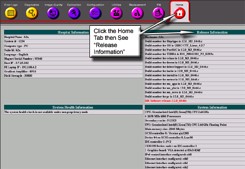
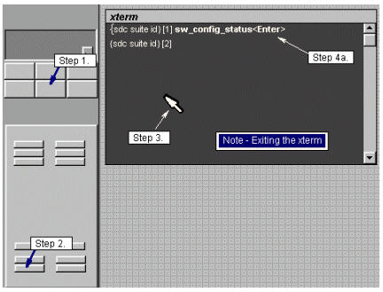
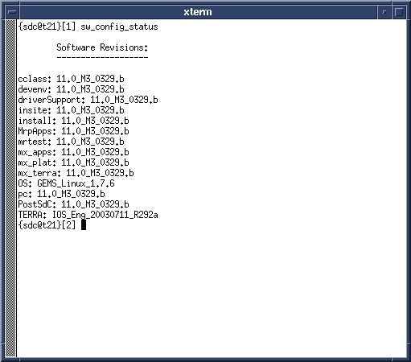

Operating Documentation
Direction 5133330-3, Rev# 14
Signa EXCITE HD 3.0T Service Methods
Module Version 1.0, Version Date 4/27/07
Operating Documentation |
| Required Persons | Preliminary Reqs | Procedure | Finalization |
|---|---|---|---|
| 1 | Not Applicable | 5 mins | Not Applicable |
There are two different methods for acquiring the software revision. Whichever method you use, enter the command <sw_config_status> and press <Enter>.
| NOTE: | Instructions for booting and shutting down the system are located in the Procedure for Bringing the System Up/Down. This procedure describes how to determine the software release the LINUX PC computer. |
| Last Update | 11/30/2004 |
From the Service page, start the Service Browser.
Verify that the Home tab is selected.
For Release and software revision information, see Illustration 1.
Illustration 1: Common Service Desktop Home Screen

If you are not already on the Service Desktop, click on the [Service] icon. See Illustration 2.
Illustration 2: C-Shell

From the Service Desktop Manager, click on [C-Shell] to open an xterm.
Locate the cursor in the window.
To see the software revisions used on your system, at the prompt, type <sw_config_status> and press <Enter>. See Illustration 3 to view what is displayed on the Terminal when using this command.
Illustration 3: SW_CONFIG_STATUS

No finalization steps.